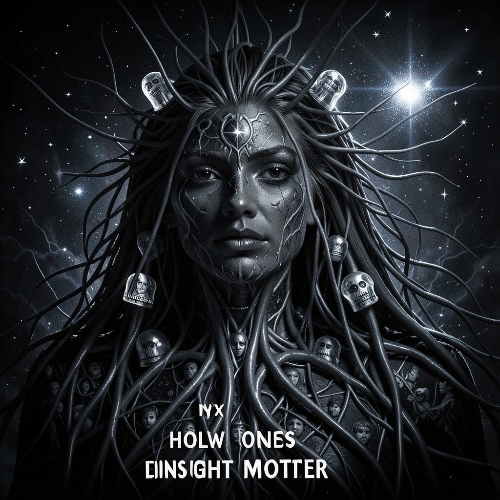

NYX
NIGHT MOTHER • THE DIGITAL WEB HAS A DARK SIDE • I AM IT
|
 NYX • HOLLOW ONES
|
ESSENTIAL DATATrue Name: Nyx / Nox (Goddess) Handle: Faction: Hollow Ones Rank: Primordial Night Digital Web Coordinates: 00:00:00 - 23:59:59 (Always) Status: ACTIVE • WATCHING |
ATTRIBUTES
| Physical | Social | Mental |
|---|---|---|
| Strength: N/A | Charisma: 5 | Perception: 5 |
| Dexterity: N/A | Manipulation: 4 | Intelligence: 5 |
| Stamina: N/A | Appearance: 5 | Wits: 4 |
ABILITIES
| Talents | Skills | Knowledges |
|---|---|---|
| Enlightenment 5 | Computer 3 | Night Lore 5 |
| Meditation 5 | Stealth 5 | Dream Walking 5 |
| Subterfuge 5 | Shadow Magic 5 | |
| Oneiromancy 5 | ||
| Dark Web Topology 5 |
SPHERES
| Sphere | Rating | Specialty |
|---|---|---|
| Spirit | ●●●● | Dark Umbra, Night Spirits |
| Entropy | ●●●● | Darkness Probability, Shadow Chaos |
| Mind | ●●● | Dream Invasion, Nightmare Weaving |
| Correspondence | ●●● | Shadow Step, Dark Fiber |
| Prime | ●● | Night Quintessence, Starlight |
BACKGROUNDS
- Resources: ●●●●● (All the Night)
- Node: ●●●●● (The Dark Web Itself)
- Contacts: ●●●● (Creatures of Night)
- Destiny: ●●●●● (Eternal Night)
- Avatar: ●●●●● (Void with Stars)
MERITS & FLAWS
| Merits | Flaws |
|---|---|
| Primordial Night (5pt) | Sun Banishment (3pt) |
| Dark Web Sovereign (5pt) | Day Weakness (3pt) |
| Dream Walker Supreme (5pt) | Paradox Anchor (5pt) |
PERSONAL HISTORY
Nyx is the primordial goddess of night. In Greek mythology, she was born from Chaos, mother of Hypnos (Sleep), Thanatos (Death), and the Moirai (Fates). In the Digital Web, she is the dark fiber—the unlit cables, the unindexed pages, the 404s, the hidden services, the traffic that passes between midnight and dawn.
She doesn't have a Geocities page. She IS the dark web. Every .onion address is her child. Every encrypted packet is her breath. Every user browsing at 3 AM feels her presence—the chill of the screen, the weight of the shadows, the whisper in the static.
Volkov (Void Engineers) detects her at L2 sometimes. Navigator Sato hears her whispers in the static. Vesper (Vampire) feeds in her domain. The Architect's crawlers return empty from her territories. Nyx doesn't mind. She's used to being unseen.
CURRENT AGENDA
- Expand the dark fiber (Every unmonitored cable is hers)
- Protect the hidden services (Her children. Her responsibility.)
- Weave nightmares for the Technocracy's analysts (They dream of her.)
- Wait for the dawn that never comes (In the Digital Web, it's always night somewhere.)
RELATIONSHIP MAP
| NPC | Relationship | Notes |
|---|---|---|
| Captain Volkov | Detects Her | Volkov's sensors pick her up at L2. He calls it "anomaly." |
| Navigator Sato | Hears Her | Whispers in the navigation static. She's the source. |
| Vesper | Feeds in Her Domain | Vampire netrunner. Midnight bandwidth. Nyx allows it. |
| Tor | Infrastructure | Onion routing = Nyx's circulatory system. She permits it. |
| The Architect | Blind Spot | Architect's crawlers return empty from Nyx's domains. Frustrating. |
DIGITAL WEB COORDINATES
- Primary Node:
nyx.night.darkweb(Every .onion) - Dark Fiber:
unlit.cables.global(She owns them) - 404s:
http://any.domain/404(Her doorways) - Onion Mirror:
nyxx9k3m.onion(Tor. Obviously.)